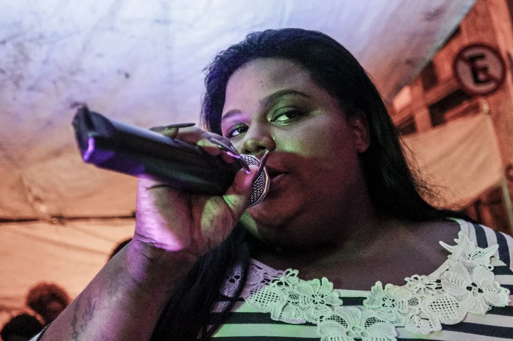
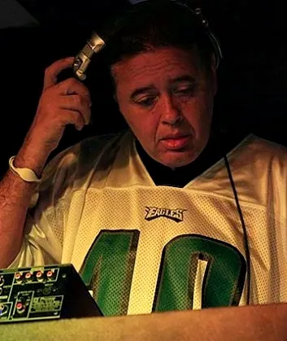
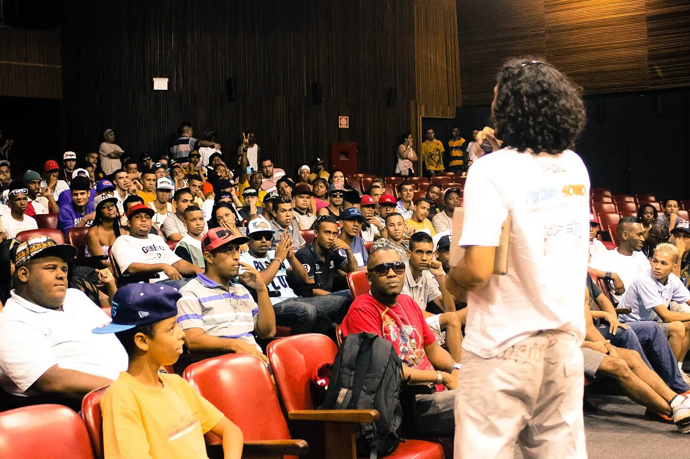

Brazilian funk
What is Brazilian funk? Baile funk, funk carioca and the songs
An MC, a DJ and a sound system turned all the way up: the dance music of Rio's favelas, from Miami bass loops to São Paulo's street parties.
Funk, but not that funk.
Brazilian funk has almost nothing to do with James Brown's funk, even though it started with him. In the 1970s, Rio's nightclubs and sound crews threw Black, favela-centred parties to American soul and funk records, and to Tim Maia. The name stayed. The music changed completely once Rio's DJs found Miami bass, New York freestyle and Los Angeles electro in the 1980s.
What came out of that is a genre with many regional strains and one constant: a DJ, an MC and a very loud sound system. The Guardian describes the sound as harsh kicks, offbeat crispy cymbals and powerful, sometimes incomprehensible vocals, blasted out of big speakers. The FADER calls the term as broad a descriptor as hip-hop or dance music.

The name needs sorting out first. "Carioca" is what people from Rio are called, so funk carioca means Rio funk, and funk brasileiro is simply the Portuguese for Brazilian funk. Outside Brazil, "baile funk" is used for the music itself; inside Brazil a baile is a ball, a dance party, and the music played at one is just funk.
What Brazilian funk sounds like.
Brazilian funk music is built from a small shared stock of rhythms, which producers reuse and rework rather than invent from scratch. Wikipedia's article on funk carioca sums the beat up as "Bum-Cha-Cha". Melodies are usually sampled. Modern records lean on horn and accordion stabs, and the brass intro from the Rocky theme turns up again and again.
The MC is half of every record. The FADER notes that funk usually pairs a producer with a rapper, and that the MC's job is to pump up the crowd, often by repeating one word or phrase until it blends into the beat. The lyrics deal with poverty, dignity, racial pride, sex, violence and social injustice. Many are explicit, and radio stations play clean versions while the bailes and the sound cars play the harsher ones.
The oldest beats were not Brazilian at all. Early funk carioca music looped Miami bass and freestyle records, and the two loops it used most were DJ Battery Brain's "808 Volt", known in Rio as "Voltmix", and Hassan's "Pump Up the Party". DJ Marlboro named Afrika Bambaataa and the Soulsonic Force's "Planet Rock" (1982) as its main influence.
Where funk carioca came from.
Rio's DJs heard those records partly by accident of geography. Miami was a stop on the flights they took to buy American records, and Miami bass came home with them. Through the 1970s, the city's clubs played soul and funk, and crews such as Soul Grand Prix formed around those nights. In the 1980s the parties split in two. Baile charme took contemporary R&B and ballads; baile funk took Miami bass, freestyle and the energetic dancing that went with them.
The parties of the 1980s were run by DJs such as Big Boy and Ademir Lemos and by sound teams such as Furacão 2000, Bandcamp Daily writes. DJ Marlboro, born Fernando Luís Mattos da Matta, built his name on the radio show Cidade Disco Club on Rádio Cidade. One record that shows how American the starting point was: "It's Automatic" by the US group Freestyle, a hit in Rio's suburbs that appeared on a Furacão 2000 compilation in 1988, according to the DJ and collector Priscila Cavalcante.

The first serious study of the scene came the same year. Hermano Vianna turned his master's thesis into the book O Mundo Funk Carioca in 1988. By then the music had taken hold in the favelas, and from the mid-1990s it grew well beyond them.
What happens at a baile funk.
A baile funk is a party first. The word baile means a ball, and in Brazil the phrase names the event, not the genre. The classic baile is held in a favela, with a DJ, an MC and a sound system turned up as far as it goes.
The scene was pioneered largely by Afro-Brazilian artists, and the FADER notes that its parties were criminalised and targeted by police along racial lines. In the 1990s, the Guardian writes, the media and politicians linked funk to violence and drug trafficking. One strand, proibidão, really does sing about the drug trade and the war with the police, and playing it can be treated as a crime.
The dance has its own culture. Passinho dancers became a fixture of the Rio scene, and Rio held an annual Parada Funk from 2015. The Guardian also records the cost of virality: Rennan da Penha, one of Rio's main baile DJs, campaigns against what he calls "TikTok baile funk", and says passinho dancers have lost ground to TikTok influencers.
São Paulo has its own version of the party. The fluxos are favela street parties where souped-up car sound systems play all night, and they gave their name to a whole style, the ritmo dos fluxos.
Tamborzão and the 1990s.
The step from American loops to a Brazilian rhythm came with the tamborzão, the rhythmic pattern most modern funk is still built on. In the 1990s funk became a Rio phenomenon, and Furacão 2000, the city's production company and label, is credited with popularising it across Brazil through its compilations and shows. From Rio the tamborzão spread to Fortaleza, Recife, Belo Horizonte and São Paulo.
The voices of that era included women who sang as bluntly as the men. Tati Quebra Barraco, born Tatiana dos Santos Lourenço, is counted among the pioneers of the genre's spread, and MC Carol, born Carolina de Oliveira Lourenço, is known for double entendre and feminist themes. Bandcamp Daily names the two as early trailblazers.
In the mid-2000s, the Guardian writes, funk went through a renaissance that put the MC at the front instead of the DJ. That is also when the rest of the world started listening.
How baile funk went global.
The baile funk Brazil exported first reached Europe on compilations. Favela Chic (2001) was the first release on a label outside Brazil. In 2003, "Quem Que Caguetou (Follow Me Follow Me)" by Black Alien and Speed was used in a European car commercial.
Tetine compiled Slum Dunk Presents Funk Carioca for Mr Bongo in 2004 and played funk on Resonance FM. Daniel Haaksman put out Rio Baile Funk Favela Booty Beats the same year and More Favela Booty Beats in 2006, and the label Man Recordings released Edu K's "Popozuda Rock n' Roll".
Diplo carried funk into Western club music. He played it on the Piracy Funds Terrorism mixtape in 2004, made the Favela on Blastin mixtape that year, worked with Deize Tigrona, and in 2010 released the documentary Favela on Blast. M.I.A. drew on it for "Bucky Done Gun" in 2005.
The line runs into pop. Major Lazer's "Pon de Floor" (2009) became the basis of Beyoncé's "Run the World (Girls)" in 2011, the Guardian notes. In 2023 Cardi B and Travis Scott both reached for the sound, on "Bongos" with Megan Thee Stallion and on "K-pop".
Brazilian funk styles.
Every region has its own sound, and most of the named subgenres date from 2008 or later. Wikipedia's article lists them by city and by tempo, and the main ones are below.
| Style | Where and when | What marks it | A record or name to know |
|---|---|---|---|
| Proibidão | Rio de Janeiro, early 1990s | Lyrics about the drug trade and the war with the police | Played at bailes, not on radio |
| Funk melody | Rio de Janeiro | Electro rhythms and romantic lyrics, led by women | Anitta, Perlla |
| Funk ostentação | São Paulo, 2008 | Cars, motorcycles, drink and leaving the favela | KondZilla, MC Lan |
| Brega funk | Recife, early 2010s | MIDI pianos, caixa snares, 160 to 180 BPM in half time | Pabllo Vittar, "Parabéns" |
| Rasteirinha | About 96 BPM | Atabaques, tambourines and beatboxing | MC WM, "Fuleragem" |
| Rave funk | Created by DJ GBR, 2016 | Funk mixed with electronic music | Kevinho, "É Rave Que Fala Né" |
| 150 BPM | Rio de Janeiro, 2018 | Faster tempo, taken up by carnival blocos in 2019 | Kevin o Chris, "Ela É do Tipo" |
| Mandelão | São Paulo, late 2010s | Repetitive lyrics, raw production, blown-out bass | Bibi Babydoll, "Automotivo Bibi Fogosa" |
| Bruxaria | São Paulo South Zone, 2020s | Aggressive, horror atmosphere | DJ K, DJ Arana, DJ Blakes |
Funk ostentação, born in São Paulo in 2008, swapped the war stories of proibidão for cars, motorcycles, drink and the idea of leaving the favela. The director Konrad Cunha Dantas, known as KondZilla, is credited as its main populariser through his video production company and label, KondZilla Records.

The 150 BPM style was started in Rio in 2018 by the DJs Polyvox and Rennan da Penha, and the city's carnival blocos took it up in 2019. Mandelão came out of São Paulo in the late 2010s, from the Baile do Mandela in Praia Grande: simple, repetitive lyrics, raw production, heavy beats and blown-out bass. Bruxaria, Portuguese for witchcraft, is the darkest strand: aggressive, horror-tinged music from São Paulo's South Zone in the 2020s, made by DJ K, DJ Arana and DJ Blakes for parties such as the Baile da DZ7 in Paraisópolis.
The biggest Brazilian funk songs.
The biggest Brazilian funk songs of the last decade were made for YouTube as much as for the baile. Kevinho's "Olha a Explosão" came out late in 2016 and became a meme in 2017; its video on the KondZilla channel passed a billion views.
MC Fioti's "Bum Bum Tam Tam", released with its video on 8 March 2017, samples Bach's Partita in A minor for solo flute. It went to number one in the Netherlands and into the top five in France.
Anitta's "Vai Malandra", with MC Zaac and Maejor, produced by Tropkillaz and DJ Yuri Martins, came out on 18 December 2017.
Ludmilla first became known with "Fala Mal de Mim". In 2020 she turned to pagofunk, the blend of funk and pagode, on her EP Numanice.
MC WM's "Fuleragem" is the best-known record of rasteirinha, a slower strain at about 96 BPM, with atabaques, tambourines and beatboxing.
Brega funk from Recife sounds nothing like the Rio records: MIDI pianos, caixa snares and a tempo of 160 to 180 BPM played in half time. Pabllo Vittar's "Parabéns", with Psirico, is the example Wikipedia gives.
Kevin o Chris's "Ela É do Tipo" is one of the most popular 150 BPM records, and Drake remixed it in 2019. From São Paulo, Bibi Babydoll's "Automotivo Bibi Fogosa" topped Spotify in Ukraine in 2023 and reached number three in Belarus and Kazakhstan.
The Weeknd and Anitta's "São Paulo" (2024) is listed by Wikipedia as rave funk, the fusion of funk and electronic music that DJ GBR started in 2016.
Brazilian funk artists.
The Brazilian funk artists who shaped the genre fall into a few generations. DJ Marlboro and the Furacão 2000 team built it in the 1980s and 1990s. Tati Quebra Barraco and MC Carol gave it its female voices.
The 2010s belonged to the video era. Kevin o Chris, born Kevin de Oliveira Zanoni in Rio, is the main face of 150 BPM. KondZilla's channel made stars of the São Paulo ostentação MCs. Anitta, born Larissa de Macedo Machado, started out as a baile MC, according to the Guardian, and now mixes pop, funk, reggaeton and electronic music. Not all of it is funk: her 2021 hit "Envolver" is reggaeton. Bandcamp Daily names her and Pabllo Vittar as the artists who took funk global.
The current underground is mostly in São Paulo. DJ Arana, born Guilherme Galdino, made his first tracks on a phone and passed 210 million YouTube views, the Guardian reported in 2023. DJ K, whose name is pronounced "Ka", calls his style bruxaria. Badsista, whose album Gueto Elegance came out in 2021, has pushed female and queer voices to the front. Rennan da Penha remains one of Rio's main baile DJs.
Rennan da Penha's carnival set for Boiler Room in Rio shows the 150 BPM sound he helped start.
Brazilian funk or phonk.
The phrase "Brazilian phonk" causes most of the confusion abroad. Since early 2023, the aggressive São Paulo strain called automotivo, which blends mandelão with electronic and bass music, has been labelled Brazilian phonk outside Brazil. Wikipedia notes that the label is not widely used in Brazil and that the rhythm is not phonk.
Baile funk is also often confused with gqom. They are separate genres.
Where to start with Brazilian funk.
Start with the hits in order: "Olha a Explosão", "Bum Bum Tam Tam" and "Vai Malandra" show the KondZilla era at its peak, and "Automotivo Bibi Fogosa" shows where São Paulo went next. For the roots, go back to "Planet Rock" and listen for what Rio took from it.
Funk lives mostly outside the album format, Bandcamp Daily points out, on SoundCloud and YouTube. The releases it recommends include DJ Anderson do Paraíso's Queridão from Belo Horizonte, DJ K's PANICO NO SUBMUNDO, DJ Ramon Sucesso's Sexta dos Crias, named after his video series, Crizin da Z.O.'s Acelero from Curitiba, FBC and VHOOR's Baile from Minas Gerais, and Linn da Quebrada's Pajubá (2017) from São Paulo.
For a set, Boiler Room's Rio carnival party with Furacão 2000 and Rennan da Penha covers the city's past and present in one night, and DJ K's Boiler Room set from Los Angeles covers bruxaria.
Brazilian funk FAQ.
What is Brazilian funk called?
In Brazil it is mostly just called funk. Abroad it goes by Brazilian funk, funk carioca (Rio funk) or baile funk, and in Portuguese funk brasileiro. Each region and tempo has its own name too: mandelão, bruxaria, brega funk, 150 BPM and funk ostentação among them.
What does baile funk mean?
Baile means a ball or dance party, so in Brazil a baile funk is the party where funk is played, usually in a favela with a DJ, an MC and a large sound system. Outside Brazil the phrase is used for the music itself.
What genre is baile funk?
Baile funk music is a hip-hop-influenced dance genre from Rio de Janeiro. It grew out of Miami bass and freestyle records in the 1980s and later built its own rhythms, above all the tamborzão. Musically it is very different from American funk.
What is the most famous Brazilian funk song?
MC Fioti's "Bum Bum Tam Tam" (2017) is one of the best known abroad: it reached number one in the Netherlands. Kevinho's "Olha a Explosão" passed a billion views on the KondZilla channel, and "Automotivo Bibi Fogosa" topped Spotify in Ukraine in 2023.
What happens at a baile funk?
A DJ plays and an MC hypes the crowd, often repeating one phrase until it melts into the beat, over a sound system played very loud. People dance, and in Rio passinho dancing grew up at these parties. In São Paulo the street parties called fluxos are built around car sound systems.
Why is Brazilian funk so explicit?
Its lyrics come from the favelas and deal openly with sex, violence and poverty, and the style called proibidão sings about the drug trade. Radio stations play clean versions, while the bailes play the harsher ones. A new generation of artists, Bandcamp Daily notes, is challenging the misogyny in many of the lyrics.
Is Brazilian funk the same as phonk?
No. What is sold abroad as "Brazilian phonk" is mostly automotivo, a São Paulo funk style. The name is rarely used in Brazil, and the rhythm is funk, not phonk.
What is the difference between baile funk and Brazilian funk?
For the music, none: both names describe the same genre. The difference is in Brazil, where baile funk means the party and the music is simply called funk.
Sources.
Continue reading
Read next.
Want something to play while you read? Let the Selector pick a DJ set.